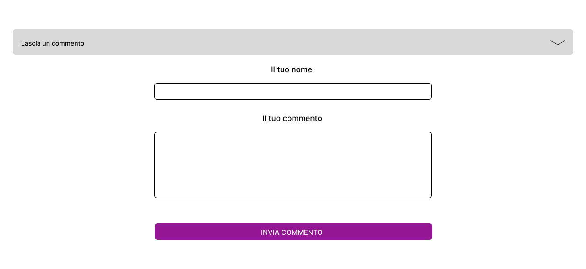

1. Idea
Il sito è una piattaforma dedicata a David LaChapelle, pensata per esplorare le sue opere, conoscere la sua carriera e interagire con altri appassionati. L'obiettivo è offrire un’esperienza immersiva, dove gli utenti possono ammirare la galleria fotografica, acquistare le immagini o salvarle tra i preferiti. Ogni opera ha una sezione commenti per favorire il confronto e la condivisione di opinioni.
Il pubblico di riferimento comprende appassionati d’arte, collezionisti e fotografi. L’interfaccia è intuitiva, con immagini in primo piano e una navigazione fluida per rendere l’esperienza semplice e coinvolgente.
Il sito include una galleria interattiva, la possibilità di registrarsi per gestire il carrello e funzioni come commenti e like, rendendo l’interazione dinamica.
La struttura prevede una Home Page, una sezione dedicata alle opere e una pagina biografica sull’artista. Per lo sviluppo sono stati utilizzati Visual Studio Code, Pinterest per l’ispirazione grafica e Draw.io per la progettazione.
Il design è moderno e colorato, studiato per valorizzare le fotografie e offrire un’esperienza visiva d’impatto, trasformando la piattaforma in un punto di riferimento per gli amanti dell’arte e della fotografia.
2. Brief
2.1 Finalità e obiettivi del progetto
Il Museo Digitale di David LaChapelle è una piattaforma pensata per esplorare e interagire con le sue opere fotografiche. Gli utenti possono ammirare, commentare e acquistare le immagini, oltre ad aggiungerle alla wishlist. Una sezione dedicata alla sua vita e carriera permette di approfondire la conoscenza dell’artista.
2.2 Pubblico di riferimento
Il sito si rivolge ad appassionati di arte contemporanea, collezionisti e fotografi, con un focus sui giovani adulti (18-35 anni) interessati a un’esperienza interattiva nel mondo della fotografia e dell’arte visiva.
2.3 Accesso alla risorsa
Ottimizzato per dispositivi mobili, il sito assicura un’esperienza fluida anche su schermi più piccoli. È fruibile anche da desktop, permettendo di esplorare e acquistare le opere senza limitazioni.
2.4 Contenuti
La piattaforma offre una galleria interattiva dove gli utenti possono scoprire, commentare e acquistare le opere, ciascuna accompagnata da descrizioni e dettagli aggiuntivi. Sono inoltre disponibili approfondimenti sulla vita dell’artista, arricchendo l’esperienza e offrendo uno sguardo sul suo universo creativo.
3. Benchmark
3.1 Idea
Oggi esistono molte piattaforme online che offrono la possibilità di esplorare opere d’arte e gallerie digitali. Tuttavia, spesso queste esperienze risultano frammentate, poco coinvolgenti o limitate alla semplice consultazione delle immagini. Voglio creare un museo digitale interattivo dedicato esclusivamente alle opere di David LaChapelle, offrendo un’esperienza immersiva e accessibile ovunque.
L’idea è quella di riprodurre, il più fedelmente possibile, l’esperienza di una visita a un museo fisico, ma con il vantaggio di un accesso immediato da qualsiasi dispositivo. Voglio superare i limiti dei siti esistenti, creando un ambiente intuitivo, interattivo e visivamente coinvolgente, che permetta non solo di esplorare le opere, ma anche di interagire con esse tramite commenti, wishlist e acquisti.
3.2 Contenuti Esistenti
Google Arts & Culture
Google Arts & Culture è una delle piattaforme più complete per l’esplorazione di opere d’arte digitali. Offre immagini in alta risoluzione, tour virtuali di musei e una vasta collezione di opere provenienti da tutto il mondo.
- Aspetti positivi: immagini dettagliate, possibilità di zoom avanzato, collaborazioni con musei.
- Limiti: poca interattività, nessuna possibilità di acquisto, interfaccia dispersiva.
- Elementi da riprendere: qualità delle immagini, sezione di approfondimento sulle opere.
- Elementi da migliorare: maggiore interattività, focus esclusivo su David LaChapelle.
Saatchi Art
Saatchi Art è una piattaforma di vendita d’arte online che permette agli utenti di scoprire, acquistare e collezionare opere di artisti contemporanei.
- Aspetti positivi: marketplace attivo, profili dettagliati degli artisti, interfaccia moderna.
- Limiti: focus più sulla vendita che sull’esperienza artistica.
- Elementi da riprendere: possibilità di acquisto delle opere, design user-friendly.
- Elementi da migliorare: creazione di un’esperienza immersiva e coinvolgente.
3.3 Perché un nuovo sito?
Nonostante l’esistenza di piattaforme di arte digitale e marketplace di fotografia, manca un progetto che combini arte, interazione e commercio in un’unica esperienza coinvolgente. Il mio sito si differenzia per:
- Un focus esclusivo su David LaChapelle, con un archivio completo delle sue opere.
- Un’esperienza museale digitale, che va oltre la semplice visualizzazione delle immagini.
- Strumenti interattivi come commenti, wishlist e acquisti per coinvolgere gli utenti.
- Un design moderno e minimalista, pensato per valorizzare al massimo le fotografie.
Il mio obiettivo è offrire un punto di riferimento digitale per tutti gli appassionati di LaChapelle, unendo arte, innovazione e accessibilità e vendita.
4. Struttura
4.1 Schema delle dipendenze
L'immagine sopra mostra lo schema delle dipendenze tra le varie sezioni del sito e come gli utenti navigano attraverso di esse.
4.2 Categorie di un item figlio
Le categorie di un item figlio in questo contesto si riferiscono alle caratteristiche principali che classificano e presentano un'opera d'arte. Le categorie principali includono:
- Title (DC) - Tower of Babel
- Creator (DC) - David LaChapelle
- Contributor (DC) - Curatore: Mario Rossi
- Type (DC) - Fotografia
- Subject (DC) - Società Contemporanea
- Description (DC) - Un'opera che esplora la frattura tra la società moderna e il caos contemporaneo, catturata in una fotografia potente.
- Format (DC) - Stampa Cromogenica
- Dimensions (DC) - 127 cm x 127 cm
- Date created (DC) - 2005
- Source (DC) - Galleria XYZ
- Rights Management (DC) - Copyright David LaChapelle
- Date issued (DC) - Marzo 2005
- Coverage (DC) - New York, USA
- Language (DC) - Italiano
5. Layout
5.1 HomePage: Descrizione del layout della pagina principale del sito.
La HomePage è strutturata per garantire una navigazione intuitiva e un forte impatto visivo. In alto, il logo e il nome del sito sono a sinistra, mentre le icone per l'account e la lista dei desideri si trovano a destra. Subito sotto, una barra di navigazione centrata offre accesso rapido alle sezioni principali: Home, Galleria e Artista. Il contenuto principale è dominato da immagini sovrapposte delle opere di David LaChapelle, creando un effetto dinamico e immersivo. Infine, una call-to-action centrale invita gli utenti a esplorare la galleria, rendendo l’esperienza coinvolgente e interattiva.
5.2 Galleria: Sezione dedicata alla visualizzazione delle opere o dei contenuti principali.
La Galleria offre un'esperienza di navigazione organizzata e interattiva per esplorare le opere di David LaChapelle. In alto, una barra di ricerca permette di trovare rapidamente le opere desiderate, mentre un sistema di filtri avanzati consente di selezionare le immagini per dimensione, supporto e tecnica. Le opere sono presentate in un layout a griglia, con ogni immagine contenuta in una card che include titolo, anno e un pulsante per maggiori dettagli. L'uso di effetti hover sulle card e un design pulito rendono l'esperienza visiva coinvolgente e intuitiva.
5.3 Artista: Pagina che offre una panoramica completa sulla vita e sull'opera di David LaChapelle.
Il wireframe della pagina "Artista" include una sezione introduttiva con una biografia approfondita di David LaChapelle, accompagnata da immagini iconiche che rappresentano i momenti più significativi del suo percorso. La pagina è strutturata per evidenziare le sue opere più celebri, suddivise in categorie tematiche per una navigazione intuitiva. Ogni opera è arricchita da una breve descrizione che ne esplora il significato, il contesto artistico e le influenze che hanno plasmato il lavoro dell’artista. Inoltre, sono presenti link interattivi a gallerie fotografiche, video musicali, interviste e articoli di approfondimento, offrendo agli utenti un'esperienza completa e coinvolgente nella carriera di LaChapelle.
5.4 Login: Sezione per l'autenticazione degli utenti.
Il wireframe della pagina di Login mostra il layout con i campi di inserimento per le credenziali e l'accesso all'area personale o registrazione se non si ha un profilo.
5.5 Opera: Pagina dedicata alla visualizzazione dettagliata di una specifica opera d'arte, in cui vengono forniti tutti gli aspetti visivi e informativi relativi all'opera stessa.
La pagina presenta una testata con logo e icone per l'account e la lista desideri. La barra di navigazione include link a "Home", "Opere" e "Artista", mentre la navigazione a briciole di pane aiuta a orientarsi nel sito. Un carosello di immagini mostra diverse foto dell'opera "Tower of Babel" con dettagli come titolo, artista, dimensioni e pulsante per visualizzare il prezzo. Sezioni espandibili forniscono informazioni aggiuntive sull'opera, l'artista, la spedizione e la consegna. Un modulo per i commenti consente agli utenti di interagire, e un carosello di opere aggiuntive mostra altre creazioni dell'artista. Il footer include copyright e link social. Il design è responsivo, grazie a Bootstrap, e include interattività con pulsanti che cambiano colore al passaggio del mouse. La pagina è visivamente interessante e progettata per un'esperienza utente fluida, approfondendo l'opera e l'artista.
6. Usabilità
6.1 Architettura
Il sito di David LaChapelle - Galleria è stato progettato per garantire una navigazione facile e chiara. Il sito è suddiviso in tre aree principali: Home, Opere e Artista. Queste sezioni sono facilmente raggiungibili tramite una navbar semplice che appare su tutte le pagine.
La Home introduce l'utente all'artista con immagini e una panoramica delle sue opere, mentre la sezione Opere presenta una galleria ben organizzata e navigabile. La pagina Artista contiene informazioni dettagliate su David LaChapelle e link alle sue opere. Il design è responsive, grazie all'uso di Bootstrap, che rende il sito perfetto per tutti i dispositivi.
È stato implementato un burger menu per rendere la navigazione semplice anche su schermi piccoli, mentre una barra di ricerca nella home e nel footer aiuta a trovare velocemente ciò che si cerca.
6.2 Aspetto e tipografia
Il design del sito è minimalista, con uno sfondo grigio chiaro che mette in risalto le immagini delle opere. La tipografia è semplice: si usa Arial per i testi principali e Times New Roman per le sezioni artistiche, creando un bel contrasto visivo.
Le immagini sono ottimizzate e presentate in griglie responsivi. Il layout si adatta perfettamente a qualsiasi dispositivo, garantendo una buona esperienza di navigazione. Le immagini delle opere sono accompagnate da effetti di overlay che non influiscono sulla velocità di caricamento del sito.
7. Servizi
7.1 Strumenti di browsing
Il sito offre diverse funzionalità per una navigazione fluida, come la scrolling infinita per esplorare la galleria senza interruzioni. La barra di ricerca è disponibile nella hero section e nel footer per trovare rapidamente opere specifiche.
Sono inoltre presenti filtri per categoria, anno e tipo di opera, per affinare la ricerca. Le breadcrumbs aiutano a orientarsi facilmente nel sito e a tornare alle pagine precedenti.
7.2 Strumenti di interazione
Sebbene il sito sia focalizzato sulla visualizzazione delle opere, sono presenti strumenti di interazione come le icone social per la condivisione. In futuro, potrebbe essere aggiunta una sezione di commenti per raccogliere i feedback degli utenti.
Nonostante non sia presente un carrello per l'acquisto delle opere, stiamo sviluppando un sistema di notifiche via email per informare gli utenti su nuovi eventi o opere.
8. Bibliografia e sitografia
8.1 Strumenti di browsing
Per realizzare il sito sono stati utilizzati diversi strumenti utili, tra cui:
- Bootstrap: per il design responsive.
- Google Fonts: per la scelta dei font.
- Figma: per la progettazione del layout.
8.2 Strumenti di interazione
Gli strumenti di interazione utilizzati sono:
- Social media icons: per la condivisione delle opere sui social.
- Sezione Commenti: per consentire agli utenti di lasciare feedback (in futuro).
- TimeLine: per aggiornamenti riguardanti eventi o nuove opere (in fase di sviluppo).
- Login: per permettere agli utenti di accedere al proprio account e gestire le proprie preferenze.
- Acquisto Opera: per acquistare opere direttamente dal sito, con opzioni di pagamento sicure (in fase di implementazione).
- Profilo Utente: per visualizzare e aggiornare le informazioni personali e monitorare gli acquisti effettuati.